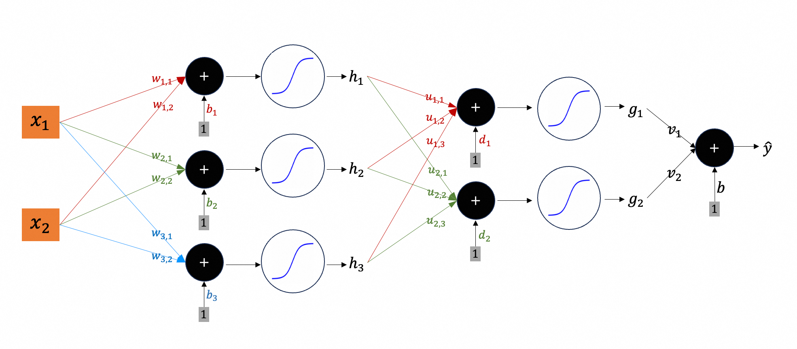
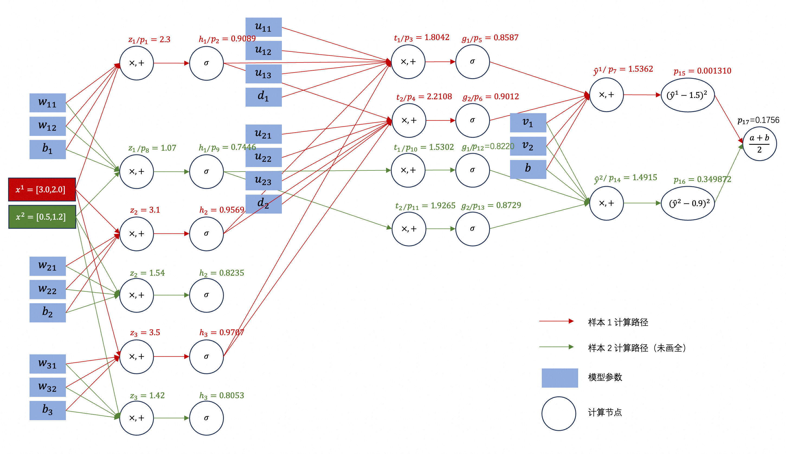
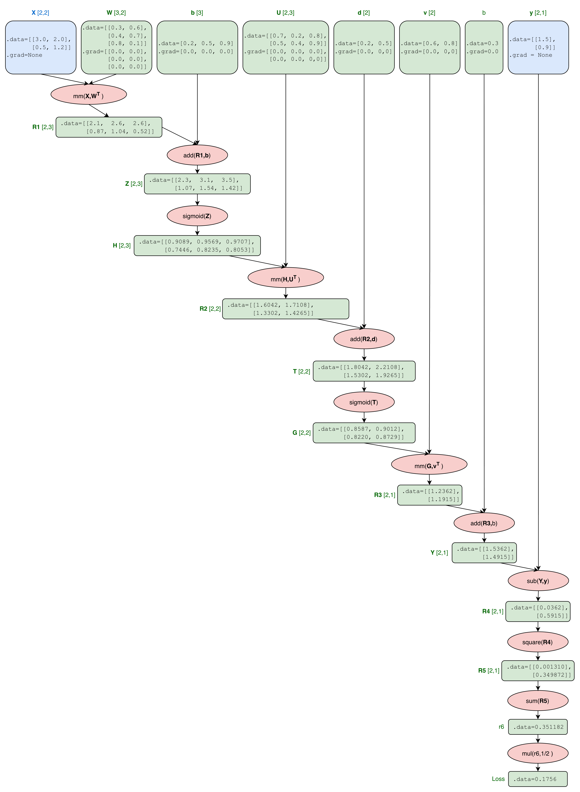
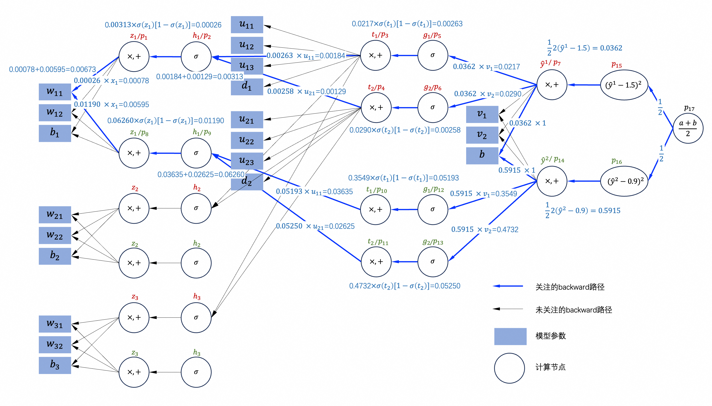
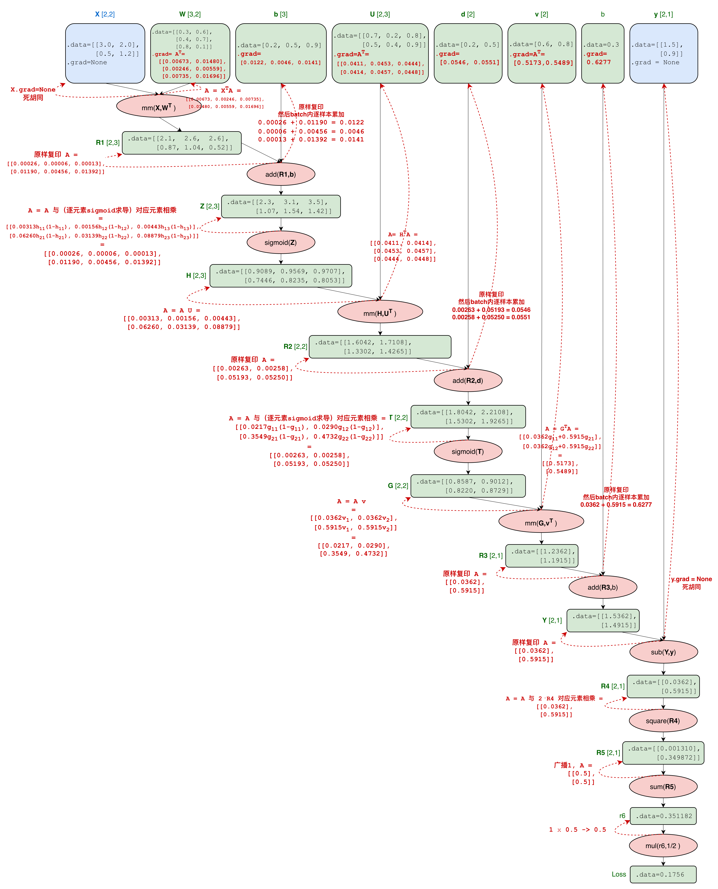

从 batch 张量出发，揭示 PyTorch 如何批量地进行前向计算（forward）和后向求导（backward）；并介绍 PyTorch 编程中的一些概念。
张量 tensor (1)
在前一篇PyTorch自动求导的第5小节（例3）中，引入了一个极小的神经网络作为例子，如图1：

当时，为了清晰地展示前向计算与后向求导的数学过程，计算全部采用标量（0维tensor）形式；2个样本（图2中红色的$\boldsymbol{x}^1$ 和 绿色的$\boldsymbol{x}^2$），每个样本2个特征，标量形式的 DAG 如图2所示：

实际上，PyTorch 使用矩阵（多维tensor）一次性处理一个 batch，即 $B$ 个样本组成一个 $B \times N$ 的矩阵（其中 $B$ 是一个 batch 的样本数；$N$ 是一个样本的特征数），前向计算从”逐样本循环”变成”一次矩阵运算”。向量形式的 DAG（PyTorch真实情况）如图3所示：

其中矩阵的每行是一个样本，和图2严格一一对应；矩阵运算按行拆开，就是每个样本的运算。注：叶子框的 .grad 零数组画的是 zero_grad() 之后的状态（新建时为 None）；中间 tensor 的 .grad 永远为 None，除非调用 retain_grad()。
对账：图3中 $Y$ 的两行 $1.5362$ 和 $1.4915$ 即前一篇PyTorch自动求导第 5.5 小节的 $\hat{y}^1$ 和 $\hat{y}^2$。
标量版 backward 如图4：

向量形式如图5所示（记 $\boldsymbol{A}$ 为当前累积梯度，它沿 DAG 反向流动，每经过一个节点按该节点规则更新）：

对账：$w_{11}$ 的梯度是 $0.006731$，与PyTorch自动求导第 5.7 小节手算的一致。边注数值按图中已舍入中间值手算，个别末位与代码全精度输出差 1（如 0.0141 vs 0.0140），属舍入口径，非计算错误。
其中第一个麻烦点是 $mm(\boldsymbol{G}, \boldsymbol{v}^T)$；先看前向计算过程：
$$
\boldsymbol{G} \boldsymbol{v}^T =
\begin{bmatrix}
g_{11}, \quad g_{12} \\
g_{21}, \quad g_{22}
\end{bmatrix}
\begin{bmatrix}
v_1 \\
v_2
\end{bmatrix} =
\begin{bmatrix}
g_{11}v_1 + g_{12}v_2 \\
g_{21}v_1 + g_{22}v_2
\end{bmatrix} \quad \tag{forward算式}
$$
可以看出，贡献给 $\boldsymbol{G}$ 4个分量的梯度分别是：
$$
\begin{bmatrix}
v_1, v_2 \\
v_1, v_2
\end{bmatrix}
$$
前面还应该乘上累积的 $\boldsymbol{A}$。用向量表示就是：
$$
\begin{aligned}
\boldsymbol{A} \boldsymbol{v} & =
\begin{bmatrix}
0.0362 \\
0.5915
\end{bmatrix} \begin{bmatrix}
v_1, v_2
\end{bmatrix} \\
\\
& = \begin{bmatrix}
0.0362 v_1, 0.0362 v_2 \\
0.5915 v_1, 0.5915 v_2
\end{bmatrix} \\
\\
& = \begin{bmatrix}
0.0217, 0.0290 \\
0.3549, 0.4732
\end{bmatrix}
\end{aligned}
$$
这也符合乘法规则：对 $\boldsymbol{G}$ 求导时，$\boldsymbol{G}$ 看到的另一槽是 $\boldsymbol{v}^T$，转置即 $\boldsymbol{v}$（横排），乘上累积梯度得 $\boldsymbol{A} \boldsymbol{v}$。
那么对 $\boldsymbol{v}$ 求导呢？由前面 $\text{forward算式}$ 可知：分量 $v_1$ 从输出两行拿到的系数是 $g_{11}$ 和 $g_{21}$；分量 $v_2$ 从输出两行拿到的系数是 $g_{12}$ 和 $g_{22}$。当然，都要乘以累积梯度，所以，使用向量形式表示是：
$$
\begin{aligned}
\boldsymbol{G}^T \boldsymbol{A} & =
\begin{bmatrix}
g_{11}, g_{21} \\
g_{12}, g_{22}
\end{bmatrix} \begin{bmatrix}
0.0362 \\
0.5915
\end{bmatrix} \\
\\
& = \begin{bmatrix}
0.0362 g_{11} + 0.5915 g_{21} \\
0.0362 g_{12} + 0.5915 g_{22}
\end{bmatrix} \\
\\
& = \begin{bmatrix}
0.5173 \\
0.5489
\end{bmatrix}
\end{aligned}
$$
可见，同样符合乘法规则：对 $\boldsymbol{v}$ 求导时，$\boldsymbol{v}$ 看到的另一槽是 $\boldsymbol{G}$，转置即 $\boldsymbol{G}^T$，放在左边乘上累积梯度，得 $\boldsymbol{G}^T \boldsymbol{A}$。
另外，$v_1$ 的梯度是 $0.0362 g_{11} + 0.5915 g_{21}$，$v_2$ 的梯度是 $0.0362 g_{12} + 0.5915 g_{22}$。展开看，$v$ 的梯度的每个分量都是两样本贡献之和（即整个batch内所有样本的累加），而机器用一次 $\boldsymbol{G}^T \boldsymbol{A}$ 把这个求和一并算完。
和乘法相比，$sigmoid(\boldsymbol{T})$ 就容易多了：对应分量上 $\text{累积梯度} \times \sigma(t_{ij}) \times (1-\sigma(t_{ij}))$。其实，从图2上也能看出来，$t \to g$ 就是互不交叉的$\sigma$ 运算。
$$
\begin{aligned}
\boldsymbol{A} & =
\begin{bmatrix}
0.0217 \sigma(t_{11}) (1-\sigma(t_{11})), 0.0290 \sigma(t_{12}) (1-\sigma(t_{12})) \\
0.3549 \sigma(t_{21}) (1-\sigma(t_{21})), 0.4732 \sigma(t_{22}) (1-\sigma(t_{22}))
\end{bmatrix} \\
\\
& = \begin{bmatrix}
0.0217 g_{11} (1-g_{11}), 0.0290 g_{12} (1-g_{12}) \\
0.3549 g_{21} (1-g_{21}), 0.4732 g_{22} (1-g_{22})
\end{bmatrix} \\
\\
& = \begin{bmatrix}
0.00263, 0.00258 \\
0.05193, 0.05250
\end{bmatrix}
\end{aligned}
$$
继续backward，又遇到乘法 $mm(\boldsymbol{H}, \boldsymbol{U}^T)$；直接套用前面的方法：分发给 $\boldsymbol{H}$ 的是 $\boldsymbol{A} \boldsymbol{U}$；分发给 $\boldsymbol{U}$ 的是 $\boldsymbol{H}^T \boldsymbol{A}$。
后面再无新运算符，以此继续，直至梯度全部算出。
使用 PyTorch 构造和图3一模一样的DAG，然后反向求导并打印结果：
1 | import torch |
打印结果：
1 | ------------ W.grad ------------ |
可见，与图5手算结果吻合（除了个别末位二次四舍五入引入的误差）。
用 nn.Module 搭网络 (2)
在前一篇PyTorch自动求导的第5小节中，我们搭建了一个神经网络（其结构如本文图1），它有20个参数。本文第1节把 20 个标量收成 6 个向量，但如第1节代码所示，仍要：
- 手写 6 个tensor：
W,bv,U,dv,vv及bs； - forward 链条：
R1 = X @ W.T; Z = R1 + bv; ...；
本节 nn.Module 就是要打包这件事。先看使用 nn.Module 版本的网络：
1 | import torch |
可见，通过 nn.Module 图1中的神经网络直接被翻译成了代码：参数按层归组，不用显式地定义W, bv, U等6个参数tensor（20个参数）。代码中 net = MLP() 生成了网络的一个实例，那么它如何运行呢？
首先，要灌入参数的初始值（灌入和前文一样的初始值，方便对账）：
1 | with torch.no_grad(): |
说明：叶子（模型的参数）禁止原地修改，因为 DAG 图里存的是叶子的引用，改它相当于篡改 DAG 图——而 forward 实时建图、backward 消费图，都不允许历史被悄悄改动。但初始化时，不得不原地修改它们（即灌入初始值）。为此，torch.no_grad() 提供了必要的通行证：关掉“自动求导录像机（边计算边构建计算图）”的开关，with 块内运算照常，但不计入计算图（否则报错：a leaf Variable that requires grad is being used in an in-place operation）。
打印（经人工排版）：
1 | ------------------------- net.state_dict() ------------------------- |
然后，调用 net(样本矩阵) 执行前向计算：
1 | X = torch.tensor([[3.0, 2.0], [0.5, 1.2]]) |
语法是：网络实例的变量名(样本矩阵)——这完全是因为 nn.Module 定义了 __call__()函数，MLP 通过继承获得了它。根据 __call__ 协议，Python 会转成 type(net).__call__(net, X)，即调用从 nn.Module 继承来的 __call__()。参数 X 是一个batch的所有样本构成的矩阵（不包括样本的标签y）。
这就是前向计算发生的地方：nn.Module.__call__() 会转调我们写的 forward(self, x) 函数；其中每一层又各自是一次 nn.Module 调用（因为 nn.Linear、nn.Sigmoid都是 nn.Module 的子类）：
self.fc1（类型是nn.Linear） 的内部 forward 是 $\boldsymbol{Z} = \boldsymbol{x} \boldsymbol{W}^T + \boldsymbol{b}$；self.act1（类型是nn.Sigmoid）的内部 forward 是 $\sigma(\boldsymbol{Z})$；- 依此逐层嵌套……
- 最终，返回 [2,1] 张量
Y。
打印（经人工排版）：
1 | ------------------------- output ----------------------------------- |
对账：$1.53616 \approx 1.5362$；$1.49151 \approx 1.4915$，和图2及图3中的两个样本的 output 吻合。
在软件领域，module 一词通常指 “有接口的、可组合的单元”。PyTorch 里 Module 到底指什么？是指满足以下3个条件的东西：
- 有自己的前向计算和局部反向规则（能接入梯度链条）；局部反向规则由 forward 内各 op 的 backward 自动合成，无需手写。每个 Module 的前向计算对其输入/参数可微（或分段可微），所以能定义局部导数，backward 才过得去。“可微 + 可组合” 是 autograd 的全部前提。
- 可带一本登记簿（参数、子Module）；
- 能作为子Module嵌套进别的 Module；
严谨性补注：数学上个别点不可微的（ReLU 在 0，取次梯度）、甚至不求导的（Dropout、Flatten）也同样是 Module——预定义 backward 规则或直通凑进同一套接口。所以“可微”描述的是这个生态的设计意图：能接入梯度链。
所以，前面例子中的 nn.Linear 是 Module（带参数），nn.Sigmoid 是 Module（不带参数），我们自己实现的类 MLP 也是 Module（带子模块）；它们都是 nn.Module 的直接子类。下文的 nn.MSELoss 也是 Module。
可以打印出 Module 的参数：
1 | print('\n------------------------- Linear parameters ------------------------') |
打印（经人工排版）：
1 | ------------------------- Linear parameters ------------------------ |
也可以打印出 Module 的子Module（2种方式）：
1 | print('\n------------------------- network sub-modules ----------------------') |
打印（经人工排版）：
1 | ------------------------- network sub-modules ---------------------- |
如前所述，Module 满足 backward 所需的一些条件，那么 Module （我们的 net 实例）可直接调用 backward 吗？
显然不行，因为 backward 实际上是计算 Error Surface 上某一点的梯度；还没定义损失函数呢，何来 Error Surface？何况，backward 是 tensor 的方法，Module 本身连这个方法都没有。
损失函数 (3)
前面说到，backward 实际上是计算 Error Surface 上某一点的梯度，而 Error Surface 是损失函数的“图像”。并且，backward 需要标量起点，那就是损失。
PyTorch自动求导 中，通过 sub、square、sum 和 mul 四个 op 凑出 $Loss = \frac{1}{2} \sum(\hat{y}-y)^2$，本文第1节的代码也使用PyTorch向量的方法重新实现了它。但PyTorch 有更简便的写法，那就是 nn.MSELoss。
1 | y = torch.tensor([[1.5], [0.9]]) |
打印：
1 | tensor(0.17559, grad_fn=<MseLossBackward0>) |
对账：损失 $0.17559 \approx 0.1756$ 和图2及图3一致。
从 loss 值（标量）就可以 backward 了：也就是，在模型选择当前参数、得到当前损失的情况下，参数的梯度，即参数的更新方向！
1 | loss.backward() |
打印：
1 | ------------------------- W (matrix) gradient ---------------------- |
对账：与图5手算的梯度一致（忽略末位精度，它是有手算时二次四舍五入导致的）。
MSELoss 还有一个参数 reduction。MSELoss 的计算过程是，计算每个样本的误差的平方，即 $loss_i = (\hat{y}^i - y^i)^2$，其中 $i = 1,2, \dots, N$ 对应 batch 的样本数；显然，这是一个与 $Y$ 同形的张量。参数 reduction 就是如何把这个张量聚合一个标量值，有3种选择：
- ‘mean’：平均；
- ‘sum’：求和。显然，只求和不平均，所有参数的梯度分量会放大 $N$ 倍，因为 backward 第一步没有
mul(1/N)，就引入了放大。这个放大会一直传递下去，直到叶子（参数）；注：严格说放大倍数是元素个数（样本数 $\times$ 输出维），本例输出一维故等于样本数； - ‘none’：不聚合，返回张量；注意：backward 需要从标量起始，所以不聚合也无法 backward。
说明：MSE = Mean Squared Error；严格来说，不应该有其它行为（sum/none），但这是 PyTorch 顺手引入的变体，默认行为还是 mean。
注意： nn.MSELoss 也是 Module——满足第2节三条件：forward（即算损失）、可微、可组合，且 loss_fn(Y, y) 同样走 call 协议。
损失函数全家福。 除了 MSELoss，PyTorch 还内置了一大批损失函数，且清一色都是 Module（都继承自 nn.Module 的子类 _Loss），满足第2节三条件：
- 回归：
nn.L1Loss（绝对误差）、nn.SmoothL1Loss/nn.HuberLoss（小误差平方、大误差线性，折中）； - 分类：
nn.BCELoss/nn.BCEWithLogitsLoss（二分类）、nn.CrossEntropyLoss（多分类，内含 log_softmax + NLL）； - 其它：
nn.KLDivLoss、nn.CTCLoss（序列）等。
一行取证：
1 | print(issubclass(nn.CrossEntropyLoss, nn.Module), len(list(nn.CrossEntropyLoss().parameters()))) |
打印：
1 | True 0 |
与 MSELoss 同款：0 个可训练参数（损失函数自身无参数）、可微、可组合。正因为损失没有可训练参数，优化器只管 net.parameters() 即可——换损失函数才只改一行构造代码，训练循环纹丝不动；假如某损失带可训练参数，替换它就得把其参数并进优化器（zero_grad()/state_dict() 也要算上它），一行便不够了。且它们都带同一个 reduction 旋钮（默认 'mean'）——这是 _Loss 基类的通用设计。
补注：少数损失带可选
weight（如CrossEntropyLoss的类别权重），它注册为 buffer 而非 Parameter：随to(device)迁移，但不在parameters()里、不接收梯度。可见登记簿除了_parameters、_modules两页，还有第三页_buffers。
优化器 (4)
在上一节，backward 计算出了初始参数（记为$\boldsymbol{\theta}^0$）的梯度；梯度指向损失增长最陡的方向（故反方向是下降最快的方向）。
在机器学习原理-回归中，已经总结过梯度下降的更新规则：
$$
\boldsymbol{\theta}^{t+1} = \boldsymbol{\theta}^t - \eta \boldsymbol{\nabla}L(\boldsymbol{\theta}^t) = \boldsymbol{\theta}^t - \eta \boldsymbol{g}^t
$$
其中，
- $\eta$ 是学习率，控制每步迈多大；
- $L$ 表示损失函数；显然，它的自变量就是模型的全体可训练参数；
- $\boldsymbol{\nabla}L(\boldsymbol{\theta}^t)$ 表示在损失函数 $L$ 的“图像”（Error Surface）上，点 $\boldsymbol{\theta}^t$ 处的梯度；
- $\boldsymbol{g}^t$，上述梯度的简写形式；
- 减号是取梯度的反方向，即损失下降的方向；如前所述，梯度指向损失增长最陡的方向（故反方向是下降最快的方向）。
这条规则只依赖两样东西：参数和它们的 .grad。先手写一个最朴素的优化器：
1 | import copy |
几点细节说明：
- 如第2节初始化模型参数时所述：叶子（模型的参数）禁止原地修改，因为 DAG 图里存的是叶子的引用，改它相当于篡改 DAG 图——而 forward 实时建图、backward 消费图，都不允许历史被悄悄改动。这里我手搓优化器，需要手工更新参数，故使用
no_grad关掉“自动求导录像机（边计算边构建计算图）”：with块内照常计算（-=运算符），但不记入计算图。实际上，PyTorch 自己做这件事时，也需要关掉“录像机”（总之：谁在图外原地修改叶子，谁负责关录像机）：optimizer.step()内部以set_grad_enabled(False)关掉同一个开关（它也是no_grad的底层实现）； net.parameters()递归遍历登记树，把 20 个参数一个不漏地收进来——正是上面说的消费路径；copy.deepcopy()克隆每个张量，存档；用于恢复net，以便演示 PyTorch 自动优化（和这里手搓优化对账）；
打印：
1 | ------------------------- before update ---------------------------- |
对账：一轮之后模型参数 $W$ 被更新如下（梯度值来自图5的手算结果）
- $0.3 - 0.1 \times 0.00673 = 0.29933$
- $0.6 - 0.1 \times 0.01480 = 0.59852$
- $0.4 - 0.1 \times 0.00246 = 0.39975$
- $0.7 - 0.1 \times 0.00559 = 0.69944$
- $0.8 - 0.1 \times 0.00735 = 0.79927$
- $0.1 - 0.1 \times 0.01696 = 0.09830$
手写只为看清本质，PyTorch 把这条规则打包成了 torch.optim：
1 | net.load_state_dict(init_sd) # 恢复初始参数 |
打印：
1 | ------------------------- before torch.optim ----------------------- |
对账：和前面手搓版完全一致；
说明：
net.parameters()：生成器；递归遍历登记树（net的子孙Module、它们的参数，也就是从net开始递归遍历_modules及_parameters），产出 6 个 Parameter 张量（共 20 个标量）的引用；torch.optim.SGD(...)：- 以 6 个张量的引用，以及
lr为参数，构造优化器SGD；优化器持有 6 个张量的引用； torch.optim.SGD是optim.Optimizer的子类（实跑 True），公共接口zero_grad/step/state_dict/load_state_dict齐全；- 但，优化器不是 Module （不是
nn.Module的子类）：不参与前向计算、没有计算图，它只是站在网络旁边、手里拿着参数引用的”管理员”。这与第3节的损失（是 Module）、第2节的网络（是 Module）形成三分：网络是主角（Module），损失是裁判（Module），优化器是教练（Optimizer，非 Module）； torch.optim.SGD是纯梯度下降，没有其它花活——除了 momentum（默认为0）以及weight_decay等旋钮。关于 momentum，见回归中的遗留问题；- SGD 表示“随机梯度下降”（Stochastic Gradient Descent），”随机”指的是：每步的梯度不是在全量数据上算的，而是在随机抽出的一个 batch 上算的。这里，我们只有一个 batch，严格说不是随机的，但 PyTorch 里这条更新规则就叫 SGD；DataLoader （见后文）每次吐出的 batch 是随机的，也就是”随机性”的来源；
- SGD 只是优化器的一种，还有很多其它类型的优化器：自适应学习率（按历史梯度给每个参数调步长，包括 Adagrad、RMSprop、Adadelta）；Adam 系（动量 + 自适应步长，包括 Adam、AdamW、Adamax 等）；以及一些适用于特定场景的优化器。
- 以 6 个张量的引用，以及
optimizer.zero_grad()：load_state_dict不清除.grad，所以 backward 前必须先清零；loss_fn(net(X), y)：一行代码包含两步 forward，net(X)（通过__call__调用我们实现的MLP::forward()）和loss_fn(output, 样本标签)；整个（两步）forward 过程中，边算边建计算图（define-by-run）——生成每个可微 op （output张量和grad_fn节点），节点按最小信息原则保存 backward 所需的输入；loss.backward()：引擎从loss.grad_fn出发逆拓扑序遍历，逐节点执行求导局部规则（如前文所述）；只有叶子实际落入.grad（AccumulateGrad 节点），中间张量不落（见PyTorch自动求导）；图是一次性消费品：结算完即释放 saved tensors，第二次 backward 直接报错（实跑原文 “Trying to backward through the graph a second time”）。一方面：计算图的作用全在于自动求导，backward 之后理应销毁；另一方面，省显存的最小信息原则也源于“用完即弃”；optimizer.step()：就是前面手搓版做的事——关录像机（set_grad_enabled(False)）；然后对每个模型参数p执行p.add_(p.grad, alpha=-lr)——原地修改、不生成计算图；
上面代码中，构造优化器之后的部分，其实是一步训练（更新一次参数），后文将把它们放到循环体中，它包含 3 个关键动作：
- 清理梯度：如PyTorch自动求导中所述，叶子节点（模型参数）的梯度使用
+=累加，所以一步训练之后，必须清除。一步训练中，计算梯度的唯一目的是更新参数，参数更新之后，应该立即清除。但代码实现上，往往放在 forward 之前，这样更清晰：不管之前啥状态，清除完再开始。 - forward + backward：前文已详述；
- 更新参数：消费梯度；计算梯度的目的在于此；
至此，训练循环的主件齐了：Module（第2节）、损失（第3节）、优化器（本节）。下一节让真实数据登场。
数据加载 (5)
前几节手写了一个 2 样本的小例子：X 形状 $(2, 2)$、y 形状 $(2, 1)$。真实训练当然不止 2 个样本，本章把它扩到 10 个，走一遍数据从“样本”到“batch”的完整链路：
Dataset：样本容器；DataLoader：攒 batch；- 喂给“一步训练”（第4节）；
训练数据如何组织与存储：假设训练数据已经就位，以表格形式存放（CSV 或 NumPy 文件皆可）——每行一个样本，每列一个特征，最后一列（或单独一份文件）放标签。读进内存后堆成两个张量：
- 特征
X：即第1节的 $B \times N$ 的矩阵（shape 是[B, N]）；第0维是样本数，第1维是样本的特征数； - 标签
y：$B \times 1$ 的矩阵（shape 是[B, 1]）；与模型输出同形，第3节的MSELoss直接可用；
真实项目里需要“读文件”并“转成张量”两步；这里直接手写张量（包含 10 个样本）：
1 | from torch.utils.data import TensorDataset, DataLoader |
打印：
1 | X.shape: torch.Size([10, 2])/(10, 2) |
Dataset：可索引的样本容器。 协议只有两个方法：
__len__()：有多少样本__getitem__(i)：取第i个样本
一个实现类是TensorDataset：把若干第0维长度相等的张量捆在一起，构成一个 Dataset：
1 | train_ds = TensorDataset(X, y) |
打印：
1 | len(train_ds) = 10 |
注意：
- shape
[N]（tuple 形式(N,)），表示1维向量，长度是N； - shape
[1]（tuple 形式(1,)）的张量和标量也不同：前者是1维向量、后者是0维标量；只是都只有一个数，广播时可以相互运算；
DataLoader：把样本攒成 batch
- 它消费 Dataset，沿第0维把
batch_size个样本堆成新张量； - 训练循环每迭代一次，就吐出一对
(xb, yb)——xb是 $B \times N$ 矩阵；yb是 $B \times 1$矩阵，正是第4节loss_fn(net(xb), yb)需要的形状；
1 | i = 0 |
打印（经人工排版）：
1 | batch-0: [tensor([[3.00000, 2.00000], [0.50000, 1.20000], [2.10000, 0.80000], [1.40000, 3.30000]]), |
对账：$10 = 4 + 4 + 2$——样本数除不尽时，尾部凑不满一批是常态。不在意就留着；想批批同形状就加
drop_last=True（尾批被丢，剩 2 批）。
当 shuffle=True 时，DataLoader 对每个 epoch 都重新生成一个随机排列，按排列取样（不动数据本身）；可另指定 generator 固定随机种子，使打乱可复现。
时序数据的例外（真实项目里绕不开，先立规矩）：若样本沿时间排列且任务依赖先后关系（如用过去 N 分钟预测下一分钟）：
- 不能随机划分 train/val/test——“未来”的样本混进训练集，模型提前见过答案，评估是自欺，必须按时间切；
- 不能
shuffle——样本跨时间重叠时，打乱等于把”未来”塞进”过去”的输入里。
我们的小例子中样本互相独立，可以设置 shuffle=True。
训练循环 (6)
在第4节中，已经看到了“一步训练”；而训练就是把这一步反复执行，本节就是把它组装成循环。分两步走：先跑最简单的循环，看 loss 真的在降；再接上第5节的 DataLoader，组成实际训练用的完整形态。结尾说推理模式。
本节沿用第2-5节的现场：net（初始参数存档为 init_sd）、loss_fn（MSELoss）。
循环首秀：2 个样本跑 12 步
1 | X2 = torch.tensor([[3.0, 2.0], [0.5, 1.2]]) # 第4节的 2 样本 |
打印：
1 | fc1.weight.grad: tensor([[0.00673, 0.01480], |
对账：step 1 的 $loss = 0.17559 \approx 0.1756$，以及第一次 backward 落下的梯度 $0.00673$ 都和图2及图3手算一致。
可见，loss 从 $0.17559$ 一路降到 $0.07847$，单调下降：循环真的在学。
但这 12 步还不算完整的训练循环，因为训练数据只有一个 batch；真实训练里数据由 DataLoader 分 batch 供应，并且外面再套一层 epoch。
完整组装：epoch $\times$ batch $\times$ 3个关键动作（见第4节“一步训练”）。 所以，完整的训练如下（数据换成第5节的 10 样本，batch_size=4，每 epoch 3 批，shuffle 固定种子 42）：
1 | loader = DataLoader(train_ds, batch_size=4, shuffle=True, |
打印：
1 | epoch 1 loss=0.74979 |
三点说明：
- 外层循环：对训练数据集，训练3遍；每一遍都会打乱顺序，然后再分 batch，进行$\left\lceil \frac{D}{B} \right\rceil$（向上取整）步训练；$D$表示训练集的样本数；$B$表示 batch size；
- 内层循环：就是第4节的“一步训练”；输入一个 batch 的训练数据，参数更新一次（每个参数都更新一次）；
- loss 回升：这里 loss 是每个 epoch 内各 batch 损失的加权平均；loss 波动（没有单调下降）也是常态，只要最终收敛到最优解即可。
评估模式和推理模式：它们的共同点是只前向计算、不构建计算图，更不（也无法） backward 及更新参数——用 eval() 切换网络的行为模式，用 no_grad() 关闭“录像机”；区别在输入的数据与任务：
| 推理（inference） | 评估（evaluation） | |
|---|---|---|
| 数据 | 新数据（训练没见过），没有标签 | 验证集（训练没见过），有标签 |
| 行为 | 只要预测输出 | 前向 + 和标签对比算指标（loss、准确率） |
| 模式 | eval() + no_grad() |
eval() + no_grad() |
1 | pred_train = net(X2) |
打印：
1 | 训练态前向: grad_fn = AddmmBackward0 |
net.eval()把模块切到推理模式（net.training置 False）；它只影响训练/推理行为不同的层（如 Dropout、BatchNorm），本网络没有这类层，所以单看数值没有变化；- 真正关掉”录像机”的是
no_grad()——不记图，grad_fn为 None；图不记，saved tensors 也不存，省显存：这也是“最小信息原则”的体现； - 两者分工配合：
eval()管行为，no_grad()管计算图。若忘记把推理循环放在with torch.no_grad()块内，计算图会一路悄悄堆积。
至此，已经完成训练。下一节，把训好的参数落盘保存。
保存与恢复 (7)
第6节把模型训好了，本节做三件事：
- 把训好的参数落盘；
- 在一张全新的网络里恢复它（用于继续训练还是推理，对恢复动作而言并无区别）；
- 训练中断后从断点继续；
保存 (7.1)
沿用第2-6节的现场：net、init_sd、loss_fn、X2/y2、train_ds（第5节的 10 样本）。
先来一次完整训练，得到要保存的东西；并且为 SGD 优化器添加 momentum 参数，用以展示优化器的积累状态：
1 | import os |
打印（经人工排版）：
1 | epoch 1 loss=0.78050 |
注意：只存参数，不存模型。 第2节见过 net.state_dict()：参数登记树上 20 个参数的纯数据账本（带名字）。网络的结构由 MLP 类代码定义。数据和结构分离，落盘时只写数据：torch.save(net.state_dict(), 'net_sd.pt')：将内存中的state_dict存储到当前目录的net_sd.pt文件中。
其实 torch.save() 的参数是任何可 pickle 的对象（见pickle - python object serialization），因此可以把模型参数、优化器参数（例如 momentum 及 lr 等 hyperparameter）、进度及积累状态（见下面打印的'state': {...}）等组成一个 dict 一起保存（dict 可 pickle），构成一个 checkpoint：
1 | torch.save({'model': net.state_dict(), 'optimizer': optimizer.state_dict(), 'epoch': 3},'ckpt.pt') |
打印（经人工排版）：
1 | ckpt.pt 已生成? True 大小: 4745 bytes |
强调：两个文件（“net_sd.pt”和“ckpt.pt”）都不含网络结构，也不含模型对象——网络结构由 MLP 类代码重建。
也可通过
torch.save(net, 'net.pt')连模型对象整个存档——但烙进文件的所谓类定义的模块路径，其实只是模块名和类名两个字符串（即'__main__'和'MLP'，不是类的代码），读回时按它们去找类；一旦代码移动、类改名，就查无此人，读回直接报错，官方不推荐。
恢复也统一：先按类代码造一张新网络（随机初始化），再 load_state_dict 灌参数。之后分两种用法。
加载——用于推理 (7.2)
加载用于推理：加载参数（只需“net_sd.pt”），切到推理模式，只要前向计算（第6节的 eval() + no_grad()）：
1 | fresh = MLP() # 新的、随机初始化的网络实例 |
打印：
1 | load 之前，新旧网络参数全部相同? False |
说明：fresh是“从磁盘恢复出来的网络”，net是原网络；
all(torch.equal(...))：证明两者 20 个参数逐一相等；torch.allclose(pred1, pred2)：证明两者前向计算输出一致
所以，存下来的，就是模型学到的全部”记忆”。
其中 weights_only=True 是 torch.load 的安全开关：只许读回张量等纯数据，拒绝还原文件里可能藏着的任意代码；从 torch 2.6（包括 2.6）起，它就是默认值，写明只为清晰。
部署到不带 Python 代码的环境时，另有 TorchScript/ONNX 等把网络结构和参数打包的格式，那是另一条路线。
加载——继续训练 (7.3)
其实继续训练有两种情况：
| 对比 | 断点续训（无缝衔接） | 以旧参数为起点继续训 |
|---|---|---|
| 目标 | 轨迹逐位复现，像没断过 | 把模型再训好一点 |
| 超参数 | 从 ckpt.pt 原样恢复（load_state_dict 自动） | 随便换，完全自由 |
| 典型场景 | 机器挂了、任务被抢占 | 微调、二阶段训练 |
断点续训，要加载“ckpt.pt”，除了模型参数，还有优化器参数（例如 momentum 及 lr 等 hyperparameter）、进度及积累状态。而微调（二阶段训练）只需加载模型参数（只需“net_sd.pt”）。
断点无缝衔接
第7.1节已经看到：state 里逐参数存着 momentum_buffer（历史梯度的累积），param_groups 里存着超参数。这些东西丢了，恢复后的训练轨迹就会变——所以无缝续训要把这些打包成 checkpoint 保存、加载。
注意，断点续训必须使用同类优化器，因为涉及到积累状态，而 SGD 的状态灌不进 Adam。
1 | # 同一个类重建实例 |
打印：
1 | 从 epoch 4 继续 |
三个细节：
- 构造优化器时写的
lr=0.2, momentum=0.9会被load_state_dict用文件里的值整体覆盖——写它只为可读，文件里存的才是准的； - 随机种子也要恢复，否则每个 epoch 内的 batch 顺序会变，真实项目里种子同样存进 checkpoint（本例省略）；
- epoch 4 的 loss（0.73603）从 epoch 3（0.57094）的水位接着走，而不是从头开始——断点接上了。
微调（二次训练）
实际项目里的样子——只加载参数，优化器全新构造，超参数随便换（例如momentum从 0.9 调成 0.03）：
1 | fresh3 = MLP() |
打印：
1 | epoch 1 loss=0.50404 |
三个细节：
- 只需
net_sd.pt，不用ckpt.pt； - 常见做法是把
lr调小（本例 0.05 < 原训练的 0.2）——参数已经训得不错，小步微调，别把它打回原形； - 微调不恢复优化器状态，所以类型也可以换（如改用 Adam）——“同类优化器”只约束断点续训那一路。
至此，训练的完整流程齐了。
数据划分：train/val/test (8)
第5-7节把 10 个样本全部拿去训练了。真实项目还差最后一块拼图：把数据分成三份。核心问题只有一个——模型在没见过的数据上表现如何（泛化能力）。
为什么要划分
- 训练循环中 train loss 一路下降，只说明参数在拟合见过的训练数据（train）；
- 但可能存在过拟合问题：参数把训练样本连噪声一起记下来，也就是在 train 集合上表现优秀，但在未见过的数据上表现很差；
- 办法：留一部分模型从没见过的数据来检验，分成如下两份：
- val 管训练过程中的调整；
- test 管最终验收；
三者各自的作用
| 数据集 | 参与梯度更新 | 目的 | 什么时候用 | 类比 |
|---|---|---|---|---|
| train | 是 | 学参数：backward() + step() |
每个 epoch 的每一步 | 平时做题 |
| val | 否 | 过程中的调整与选择：挑超参数、决定何时停（early stopping）、监控过拟合 | 每个 epoch 结束，前向一遍算 val loss | 模拟考（可反复） |
| test | 否 | 最终验收：报告无偏的泛化成绩 | 模型完全定稿后，只用一次 | 高考 |
- 跑 val 的标准姿势就是第6节那套：
eval()+no_grad()，只前向、不反向、不更新参数； - 监控过拟合的典型信号：train loss 还在降，val loss 却掉头往上——该停了；
- test 只碰一次：如果拿 test 结果挑超参数，test 就退化成了 val，最终成绩虚高——骗的是自己。这也是两集划分（train/test）不够的原因：反复调参，任何数据都会被”见过”。
划分比例与工具
常见比例 70/15/15 或 80/10/10；数据量大时 98/1/1 也可——原则是 val/test 的样本数要足够多，指标才稳定。
把本篇的 10 样本按 6/2/2 划分演示（沿用第5节现场）：
1 | from torch.utils.data import random_split |
打印：
1 | 三段样本数: 6 2 2 |
两个注意点：
random_split：- 不复制样本，只按索引分家；
- 三段互斥且覆盖全部；
- 时序数据必须按时间切：
- train = 过去；val/test = 未来；
- 绝不能随机打乱——否则”未来”的信息泄进过去，验证成绩虚高。本篇的 10 个样本没有时间顺序，随机划分没问题；
总结 (9)
PyTorch自动求导以标量推演前向计算（forward）与后向求导（backward），侧重人脑的角度；但现实中 PyTorch 以向量（张量）的方式批量计算。本文第1节通过图2与图3、图4与图5的对比，清晰地展示出了 PyTorch 到底如何运行。后面的章节介绍了基于 PyTorch 实现神经网络、训练、存储等编程细节。